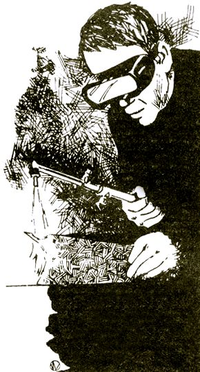

First of all, let me introduce myself: I'm currently employed as an instructor at Western Nebraska Technical College in Sidney, Nebraska, where I teach courses in industrial welding and a class in farm welding for local farmers and ranchers. Prior to my present job, I worked six years as a welder and welding technician. I'm also a member of the American Welding Society I think, therefore, that I'm qualified to comment on two articles in MOTHER NO. 31: ."Homestead Welding" by John Wells -and "How to Make Money With a Welding Route" by Henry L. Far r.
I was glad to note the two authors' enthusiasm for their subject . . . but, while the articles gave some useful information, they also contained errors which could be dangerous (or at least make the job more difficult than it need be).
Although Mr. Farr does an excellent job of pointing out the need for welding repair services and the business potential for qualified persons, he apparently lacks a thorough knowledge of the trade. (He puts his foot in his mouth, for instance, whey; he calls brazing rod "copper rod".) He also tells of cutting a hot water tank an the wrong direction, and of misunderstanding other simple directions. A person who welds for income ought to know his work well enough not to make such basic mistake at the expense of the public.
As an instructor, I must disagree with the same author's remarks on the process of learning to weld. For example, he says, "It's necessary to study and practice for many hours to get the right flames . . . . " In two years of teaching I haven't se;,: anyone take more than a few minutes to do so. It's after you get the right flame that the difficulty and hard work begin.
Elsewhere, Mr. Farr calls welding "easy" and "quickly learned'". The truth is that this craft-like many others-is easy to do but hard to do well.
Welding is beautiful work. It takes concentration, manual dexterity, rhythm, and understanding. The laws of the universe that govern the behavior of metal are written in a skilled workman's mind and body, so that he instinctively does the right thing at the right instant.
A welder worthy of the name is a person of integrity, who bears in mind that poor work can result in loss of property and life. Imagine the breaking of a band repair on a boiler, trailer hitch, or moving piece of machinery! A good weld shows real love and concern for one's fellow human beings. This occupation can, in fact, be a way of giving your energies to build a better world. Although its techniques have been perfected as part of an industrial society, there's no reason why they can't be a constructive tool in a lifestyle based on agriculture.
We do need more welders-as Mr. Farr pointed out-but they should be good craftsmen who have spent a few years studying under. an experienced person before going out on their w own. The best way I know to learn welding as a trade is throws through one of our country's many vocational schools . . . or, if you can't go that route, in a shop where you can be trained on the job.
I must now comment on some of the statements in John Wells' article. First, on pp. 39-40: " . . . the oxygen valve is then pressed to produce a blast of gas which literally blows away the molten metal." This is not how the cutting process works. When steel is red hot, it oxidizes at a very rapid rate. The precisely directed blast of oxygen from the cutting torch "burns" the steel in its path, leaving a cut that can be smoother and cleaner than one made by a saw.
On page 40: "Welding is carried out at various pressures according to the work to be done. For steel 1/8" to 3/8" thick usually run the acetylene to the hose at about 7 to 10 psi (pounds per square inch). The oxygen is held at about 25 to sir psi, since an oxygen-acetylene ratio of between three to one and five to one is the general rule."
This description confuses welding (a process of joining two pieces of metal) and cutting, which are done with totally different torches. In welding, the oxygen-acetylene ratio with a neutral flame is one to one. In oxyacetylene cutting, the ratio of consumption depends on the tip size and the thickness of metal being cut and may vary from three to one to ten to one,
In either technique, the pressure setting depends on the size of the tip (the removable portion of the torch closest to the flame) and on its manufacturer. To find the corrrect tip size and pressure setting for a given job, consult the instruction manual for your equipment. If you don't have one, write the maker (such guides are usually sent free on request).
In the next paragraph-after telling how to set the pressure-the author says: "Then open the valves on the gas containers until the regulators' tank pressure gauges register 'medium'." This is not a recommended procedure and could be very dangerous. The acetylene or fuel container valve should be opened one-quarter to one-half turn . . . so that if the hose breaks or any emergency arises, the gas can be shut off with one quick movement.
The oxygen container's valve is a double seating type and should be opened all the way, for the following reason: The pressure in a full cylinder of oxygen is 2,200 psi at 70° (as compared to about 1,600 psi in a shotgun barrel at the moment of firing). If the tank's orifice is not fully open, the force of the escaping gas can bend the valve stem and ruin the valve.
In the last paragraph on page 40, Wells advises the reader to open first the oxygen valve and then the acetylene valve when lighting the torch. The standard and recommended procedure is to open arid light the acetylene and then to open the oxygen.
On page 41, concerning the operation of the cutting torch: "The torch is best kept at an angle of about 60° to the work, with the tip pointing in the direction of travel." This method may be of help if you're using a tip size too large for the metal being cut. With the proper tip size, the torch is held at an angle of 90° to the work.
In general, the directions for arc welding are inaccurate and too sketchy to learn from. I'll mention just a couple of points with which I disagree. On page 41, in his description of the safety helmet used in this process, Wells says that the hood lens should be "at least a No. 12". Actually, the shade of the lens depends on the welder and the type of job being done. It normally varies from No. 10 to No. 12, with No, 11 most common.
Also, the chart showing rod size and amperage setting is misleading. If you try to use an electrode 3/16" or larger on a home welding machine, you'll probably blow a lot of fuses . . . because the large electrodes draw more amps than most residences or farms are serviced for. The chart also implies that large electrodes are needed to weld thicker metal. This is not so. A 1/8" electrode can handle almost any job that's likely to arise, although you may have to make several passes.
Welding is, of course, too complex a subject to be more than touched on in a magazine article. For MOTHER's readers who would like to learn welding for their own purposes, I'd recommend taking a night class at a local high school or community college. If that's not possible, get books from welding equipment manufacturers. Such works are less expensive than those from publishing houses, and their authors are generally more in touch with practical applications of the craft.
One good source of study material is the James F. Lincoln Arc Welding Foundation, P.O. Box 3035, Cleveland, Ohio 44117. This organization publishes Arc Welding Instructions for the Beginner by H.A. Sosnin (a very understandable book with explicit, clear instructions) and Arc Welding Lessons for School and Farm Shop by Harold L. Kugler (which contains direct applications to farm use arid other hard-to-find information). Each of these manuals costs $2.00.
The Union Carbide Corporation, Linde Division, 270 Park Ave., New York, N.Y. 10017 publishes two excellent books on oxyacetylene processes: Oxy-Acetylene Welding, Brazing, and Cutting for the Beginner ($2 .50) and The Oxy-Acetylene Hand boo,k ($6.75). These prices are for individual orders and include handling and shipping costs.
I have some feedback on the article "Homestead Welding" in MOTHER NO. 31.
[1] First, the author omitted a very important safety consideration (and one that's riot obvious to the inexperienced): It's imperative to wear eye protection when chipping the slag off a weld. The slag is a glassy material that can come flying off at high velocity, and is also very hot for some time after its formation. Any splinter that flew into the eye would cause permanent damage.
[2] The valves on the cylinders containing the oxygen and acetylene are opened slowly and all the way.
[3] Mr. Wells describes the procedure for lighting an injector-type torch, not tile more common equal pressure torch. In the latter case one normally opens the acetylene valve, lights the torch, and then opens and adjusts the oxygen.
[4] A horizontal flat weld is also done with the electrode pointing back toward the start of the work.
The above information is based on my own experience of 20 years of part-time welding, and was confirmed by two friends, each with over 40 years' experience as a full-time professional welder.
(It's interesting to note that these two feedbacks-in an effort to "set the record straight"-disagree with each other on a very important point. Which is it, fellows? Do you open the acetylene valve all the way as recommended by Mr. Robinson or only partway as stated by Mr. Hill?-MOTHER.)
|
|
 |
|